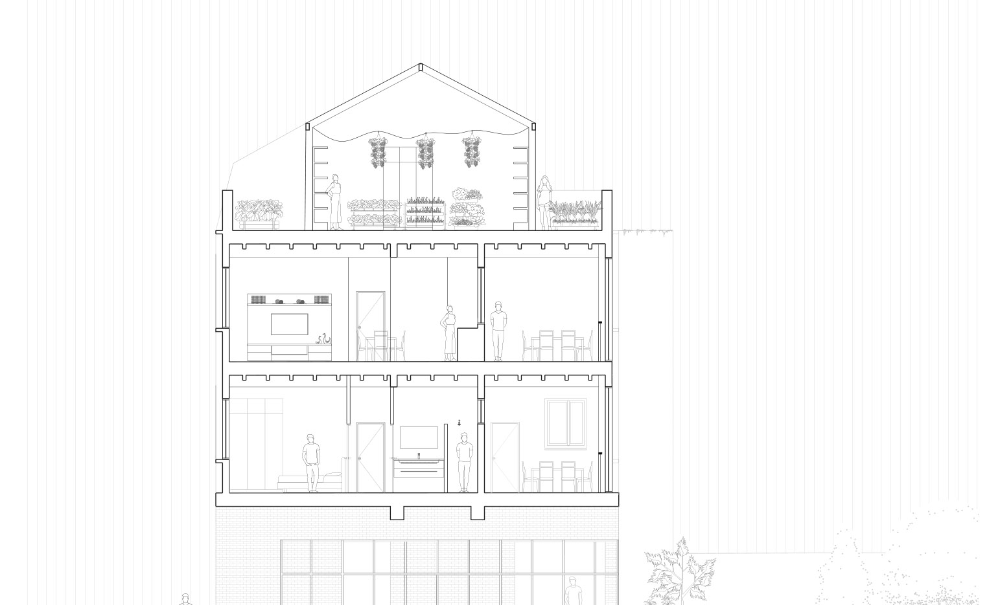
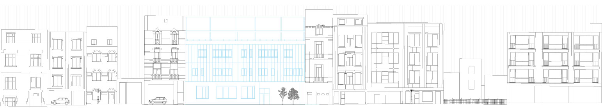
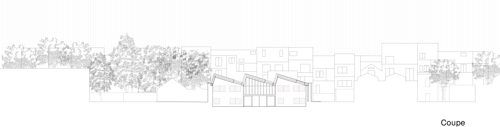
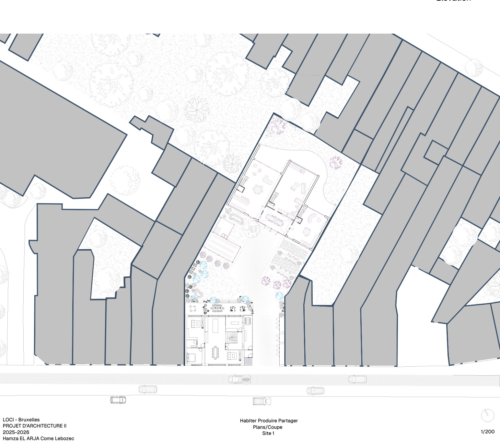
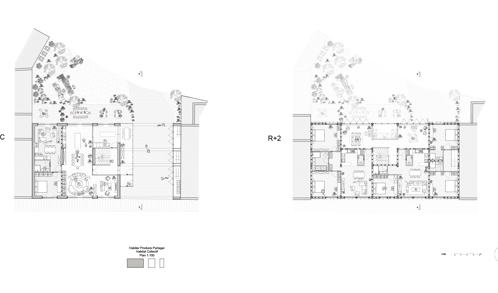
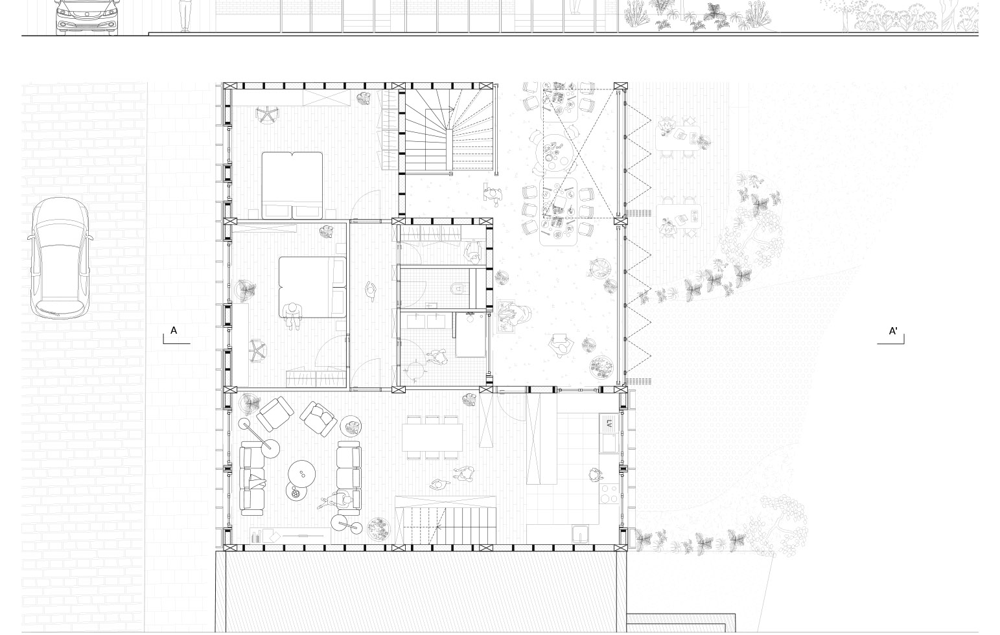
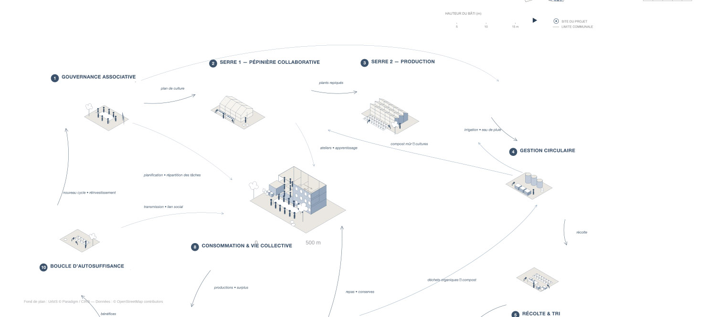
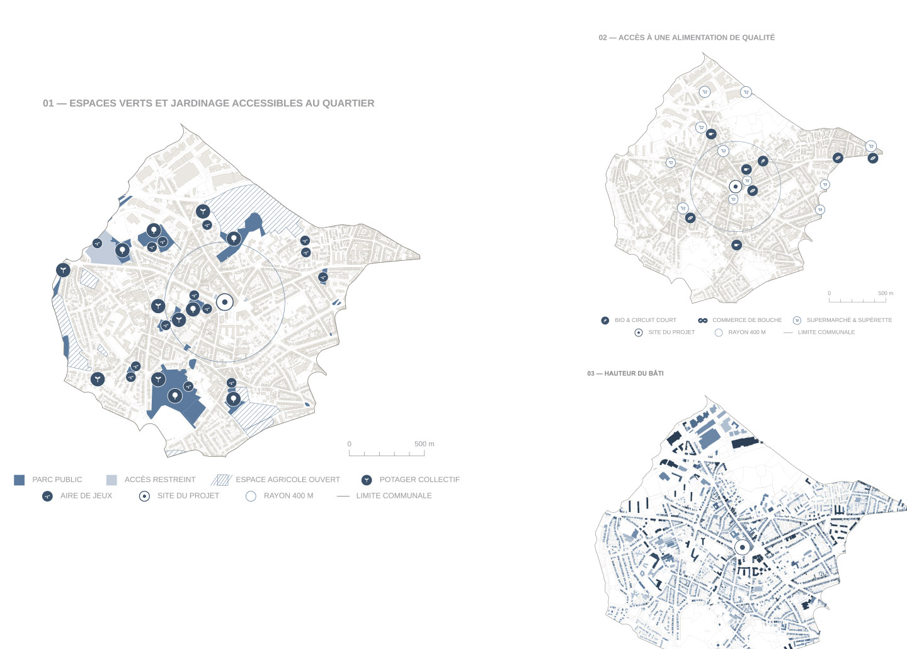
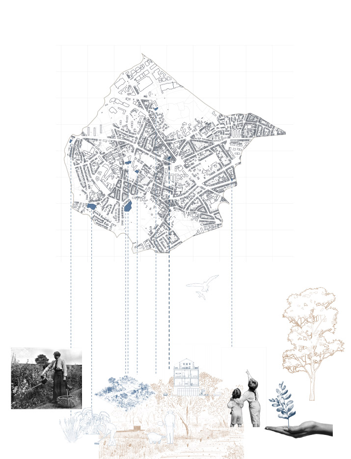
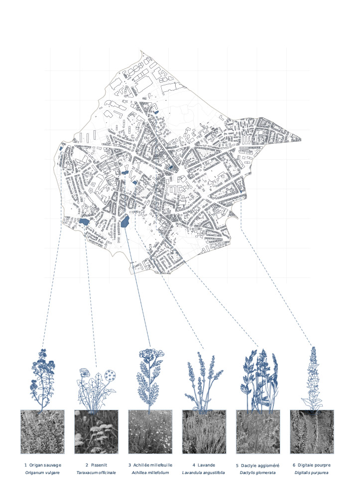

une parcelle traversante en cœur d'îlot bruxellois [lieu à confirmer]. deux maisons collectives s'installent de part et d'autre d'un jardin nourricier commun : potagers en pleine terre, serres de culture, et une serre coiffant chaque toiture — la production prend l'étage le plus ensoleillé, les logements s'organisent dessous.
la vie du lieu suit un cycle : une gouvernance associative, deux serres — pépinière collaborative et production —, une gestion circulaire de l'eau et du compost, la récolte, la transformation, et un marché mensuel qui ouvre la boucle à la commune.








